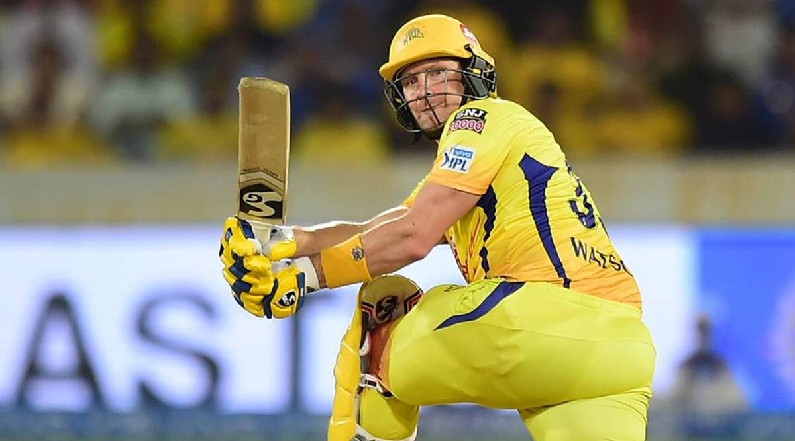
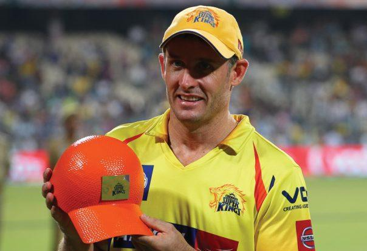
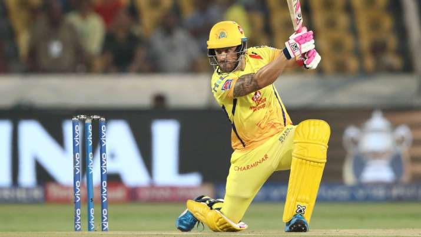
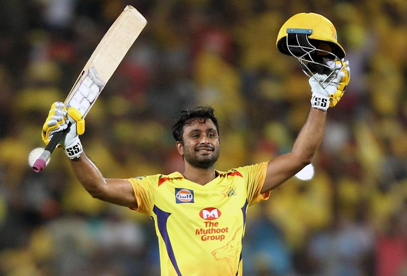

IMPACTFUL OPENERS OF CSK
Murli vijay aka monk
M vijay is a extremly dependable opener for both chennai super kings and team india in overseas condition
he has 2centuries for csk and 12centuries for team india his heroic innings of 127 against rr in cskvsrr match in 2010
ipl given hope for the team performing poor 4match loss in the tournament and his 95run in ipl 2011 final against rcb
innings won the match for csk and lifted their 2consecutive trophies and in 2012 playoff his knock of 113 against dd
won the match for csk and entered final in their own style

insta id: instagram
Shane Watson aka watto
Chennai Super Kings returned in IPL 2018. MS Dhoni and CSK management showed faith in the Aussie and bagged his services.
Watson put an end to his poor form and silenced his critics in style. He took six wickets and scored
a mammoth 555 runs, scoring his third and fourth IPL centuries in the process.
CSK went on to win the IPL that year and Watson was the hero as he scored a century in the final.

insta id: instagram
Mike hussey aka Mr cricket
Michael Hussey is the highest run-scorer among foreign players for CSK.
Michael Hussey would be one of the opening batsmen in this all-time CSK XI.
The Australian is the highest run-scorer among the foreign players for CSK.
Mr. Cricket, as he is fondly known, was the winner of the Orange Cap for the Chennai-based franchise in IPL 2013.
Overall, Hussey has aggregated 1768 runs in the IPL for CSK, at a healthy average of 42.09 and a strike rate of 123.63.
His average is the best among all CSK players who have played a minimum of ten innings in the IPL, behind only MS Dhoni.

insta id:instagram
faf duplessis aka elaisaami faf
Faf du Plessis started his IPL journey with the CSK and has played for them ever since.
The right-handed batter played an all-important knock in the Finals of the 2021 edition of the league,
scoring 86 runs off 59 deliveries, thereby winning the Player of the Match for the same.
In 2018, Punjab Kings bought Faf for INR 1.6cr, but but CSK trumped them by using their RTM card
and it sure was a bargain for them. While the classy and composed batsman did not get many outings

insta id:instagram
ambati rayudu aka bahubali
Ambati Rayudu played a significant role in CSK's title-winning run in 2018.
Ambati Raydu would be the pick for the No.4 position in CSK's all-time XI.
The Hyderabad batsman was one of CSK's stand-out performers in IPL 2018,
as the Chennai-based team bagged the title after a two-year hiatus from the competition.
Rayudu has scored 884 runs at an average of 34.00 and a strike rate of 125.39
in the last two seasons for CSK

insta id:instagram